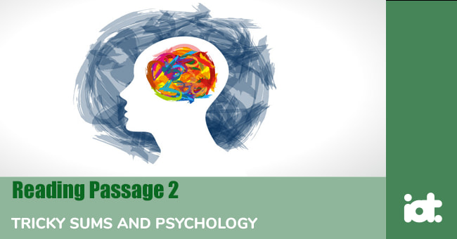

Part 1
READING PASSAGE 1
Read the text below and answer Questions 1-13.
Daydreaming
Everyone daydreams sometimes. We sit or lie down, close our eyes and use our imagination to think about something that might happen in the future or could have happened in the past. Most daydreaming is pleasant. We would like the daydream to happen and we would be very happy if it did actually happen. We might daydream that we are in another person's place, or doing something that we have always wanted to do, or that other people like or admire us much more than they normally do.
Daydreams are not dreams, because we can only daydream if we are awake. Also, we choose what our daydreams will be about, which we cannot usually do with dreams. With many daydreams, we know that what we imagine is unlikely to happen. At least, if it does happen, it probably will not do so in the way we want it to. However, some daydreams are about things that are likely to happen. With these, our daydreams often help us to work out what we want to do, or how to do it to get the best results. So, these daydreams are helpful. We use our imagination to help us understand the world and other people.
Daydreams can help people to be creative. People in creative or artistic careers, such as composers, novelists and filmmakers, develop new ideas through daydreaming. This is also true of research scientists and mathematicians. In fact, Albert Einstein said that imagination is more important than knowledge because knowledge is limited whereas imagination is not.
Research in the 1980s showed that most daydreams are about ordinary, everyday events. It also showed that over 75% of workers in so-called 'boring jobs', such as lorry drivers and security guards, spend a lot of time daydreaming in order to make their time at work more interesting. Recent research has also shown that daydreaming has a positive effect on the brain. Experiments with MRI brain scans show that the parts of the brain linked with complex problem-solving are more active during daydreaming. Researchers conclude that daydreaming is an activity in which the brain consolidates learning. In this respect, daydreaming is the same as dreaming during sleep.
Although there do seem to be many advantages with daydreaming, in many cultures it is considered a bad thing to do. One reason for this is that when you are daydreaming, you are not working. In the 19th century, for example, people who daydreamed a lot were judged to be lazy. This happened in particular when people started working in factories on assembly lines. When you work on an assembly line, all you do is one small task again and again, every time exactly the same. It is rather repetitive and, obviously, you cannot be creative. So many people decided that there was no benefit in daydreaming.
Other people have said that daydreaming leads to 'escapism' and that this is not healthy, either. Escapist people spend a lot of time living in a dream world in which they are successful and popular, instead of trying to deal with the problems they face in the real world. Such people often seem to be unhappy and are unable or unwilling to improve their daily lives. Indeed, recent studies show that people who often daydream have fewer close friends than other people. In fact, they often do not have any close friends at all.
Part 2
READING PASSAGE 2
Read the text below and answer Questions 14-25.

TRICKY SUMS AND PSYCHOLOGY
A. In their first years of studying mathematics at school, children all over the world usually have to learn the times table, also known as the multiplication table, which shows what you get when you multiply numbers together. Children have traditionally learned their times table by going from '1 times 1 is 1' all the way up to '12 times 12 is 144'.
B. Times tables have been around for a very long time now. The oldest known tables using base 10 numbers, the base that is now used everywhere in the world, are written on bamboo strips dating from 305 BC, found in China. However, in many European cultures the times table is named after the Ancient Greek mathematician and philosopher Pythagoras (570-495 BC). And so it is called the Table of Pythagoras in many languages, including French and Italian.
C. In 1820, in his book The Philosophy of Arithmetic, the mathematician John Leslie recommended that young pupils memories the times table up to 25 x 25. Nowadays, however, educators generally believe it is important for children to memorise the table up to 9 x 9, 10 x 10 or 12 x12.
D. The current aim in the UK is for school pupils to know all their times tables up to 12 x 12 by the age of nine. However, many people do not know them, even as adults. Recently, some politicians have been asked arithmetical questions of this kind. For example, in 1998, the schools minister Stephen Byers was asked the answer to 7 x 8. He got the answer wrong, saying 54 rather than 56, and everyone laughed at him.
E. In 2014, a young boy asked the UK Chancellor George Osborne the exact same question. As he had passed A-level maths and was in charge of the UK's economic policies at the time, you would expect him to know the answer. However, he simply said, 'I've made it a rule in life not to answer such questions.'
F. Why would a politician refuse to answer such a question? It is certainly true that some sums are much harder than others. Research has shown that learning and remembering sums involving 6,7,8 and 9 tends to be harder than remembering sums involving other numbers. And it is even harder when 6,7,8 and 9 are multiplied by each other. Studies often find that the hardest sum is 6x8, with 7x8 not far behind. However, even though 7x8 is a relatively difficult sum, it is unlikely that George Osborne did not know the answer. So there must be some other reason why he refused to answer the question.
G. The answer is that Osborne was being 'put on the spot' and he didn't like it. It is well known that when there is a lot of pressure to do something right, people often have difficulty doing something that they normally find easy. When you put someone on the spot and ask such a question, it causes stress. The person's heart beats faster and their adrenalin levels go up. As a result, people will often make mistakes that they would not normally make. This is called 'choking'. Choking often happens in sport, such as when a footballer takes a crucial penalty. In the same way, the boy's question put Osborne under great pressure. He knew it would be a disaster for him if he got the answer to such a simple question wrong and feared that he might choke. And that is why he refused to answer the question.
Part 3
READING PASSAGE 3
Read the text below and answer Questions 26-40.
Care in the Community
'Bedlam' is a word that has become synonymous in the English language with chaos and disorder. The term itself derives from the shortened name for a former 16th century London institution for the mentally ill, known as St. Mary of Bethlehem. This institution was so notorious that its name was to become a byword for mayhem. Patient 'treatment' amounted to little more than legitimised abuse. Inmates were beaten and forced to live in unsanitary conditions, whilst others were placed on display to a curious public as a side-show. There is little indication to suggest that other institutions founded at around the same time in other European countries were much better.
Even up until the mid-twentieth century, institutions for the mentally ill were regarded as being more places of isolation and punishment than healing and solace. In popular literature of the Victorian era that reflected true-life events, individuals were frequently sent to the 'madhouse' as a legal means of permanently disposing of an unwanted heir or spouse. Later, in the mid-twentieth century, institutes for the mentally ill regularly carried out invasive brain surgery known as a 'lobotomy' on violent patients without their consent. The aim was to 'calm' the patient but ended up producing a patient that was little more than a zombie. Such a procedure is well documented to devastating effect in the film 'One Flew Over the Cuckoo's Nest'. Little wonder then that the appalling catalogue of treatment of the mentally ill led to a call for change from social activists and psychologists alike.
Improvements began to be seen in institutions from the mid-50s onwards, along with the introduction of care in the community for less severely ill patients. Community care was seen as a more humane and purposeful approach to dealing with the mentally ill. Whereas institutionalised patients lived out their existence in confinement, forced to obey institutional regulations, patients in the community were free to live a relatively independent life. The patient was never left purely to their own devices as a variety of services could theoretically be accessed by the individual. In its early stages, however, community care consisted primarily of help from the patient's extended family network. In more recent years, such care has extended to the provision of specialist community mental health teams (CMHTs) in the UK. Such teams cover a wide range of services from rehabilitation to home treatment and assessment. In addition, psychiatric nurses are on hand to administer prescription medication and give injections. The patient is therefore provided with the necessary help that they need to survive in the everyday world whilst maintaining a degree of autonomy.
Often, though, when a policy is put into practice, its failings become apparent. This is true for the policy of care in the community. Whilst back-up services may exist, an individual may not call upon them when needed, due to reluctance or inability to assess their own condition. As a result, such an individual may be alone during a critical phase of their illness, which could lead them to self-harm or even become a threat to other members of their community. Whilst this might be an extreme-case scenario, there is also the issue of social alienation that needs to be considered. Integration into the community may not be sufficient to allow the individual to find work, leading to poverty and isolation. Social exclusion could then cause a relapse as the individual is left to battle mental health problems alone. The solution, therefore, is to ensure that the patient is always in touch with professional helpers and not left alone to fend for themselves. It should always be remembered that whilst you can take the patient out of the institution, you can't take the institution out of the patient.
When questioned about care in the community, there seems to be a division of opinion amongst members of the public and within the mental healthcare profession itself. Dr. Mayalla, practising clinical psychologist, is inclined to believe that whilst certain patients may benefit from care in the community, the scheme isn't for everyone. 'Those suffering moderate cases of mental illness stand to gain more from care in the community than those with more pronounced mental illness. I don't think it's a one-size-fits-all policy. But I also think that there is a far better infrastructure of helpers and social workers in place now than previously and the scheme stands a greater chance of success than in the past.'
Anita Brown, mother of three, takes a different view. 'As a mother, I'm very protective towards my children. As a result, I would not put my support behind any scheme that I felt might put my children in danger... I guess there must be assessment methods in place to ensure that dangerous individuals are not let loose amongst the public but I'm not for it at all. I like to feel secure where I live, but more to the point, that my children are not under any threat.'
Bob Ratchett, a former mental health nurse, takes a more positive view on community care projects. 'Having worked in the field myself, I've seen how a patient can benefit from living an independent life, away from an institution. Obviously, only individuals well on their way to recovery would be suitable for consideration as participants in such a scheme. If you think about it, is it really fair to condemn an individual to a lifetime in an institution when they could be living a fairly fulfilled and independent life outside the institution?'
Part 1
Questions 1-8
Do the following statements agree with the information given in the text?
For questions 1-8, write
| TRUE. | if the statement agrees with the information | |
| FALSE. | if the statement contradicts the information | |
| NOT GIVEN. | If there is no information on this |
1. People usually daydream when they are walking around.
2. Some people can daydream when they are asleep.
3. Some daydreams help us to be more successful in our lives.
4. Most lorry drivers daydream in their jobs to make them more interesting.
5. Factory workers daydream more than lorry drivers.
6. Daydreaming helps people to be creative.
7. Old people daydream more than young people.
8. Escapist people are generally very happy.
Questions 9-10
Complete the sentences below.
Choose NO MORE THAN THREE WORDS from the text for each answer.
Writers, artists and other creative people use daydreaming to 9
The areas of the brain used in daydreaming are also used for complicated 10
Questions 11-13
Choose the correct letter, A, B, C or D.
Part 2
Questions 14-19
The text has seven paragraphs, A-G.
Which paragraph contains the following information?
Write the correct letter, A-G, next to questions 14-19.
14. a 19th-century opinion of what children should learn
15. the most difficult sums
16. the effect of pressure on doing something
17. how children learn the times table
18. a politician who got a sum wrong
19. a history of the times table
Questions 20-25
Do the following statements agree with the information given in the text?
For questions 20-25, write
| TRUE. | if the statement agrees with the information | |
| FALSE. | if the statement contradicts the information | |
| NOT GIVEN. | If there is no information on this |
20. Pythagoras invented the times table in China.
21. Stephen Byers and George Osborne were asked the same question.
22. All children in the UK have to learn the multiplication table.
23. George Osborne did not know the answer to 7 X 8.
24. 7 X 8 is the hardest sum that children have to learn.
25. Stephen Byers got the sum wrong because he choked.
Part 3
Questions 26-31
Choose the correct letter, A, B, C or D.
Questions 32-36
Look at the following statements, 32-36, and the list of people, A-C.
Match each statement to the correct person.
| A. | Dr. Mayalla | |
| B. | Anita Brown | |
| C. | Bob Ratchett |
32. This person acknowledges certain inadequacies in the concept of care in the community, but recognises that attempts have been made to improve on existing schemes.
33. This person whilst emphasising the benefits to the patient from care in the community schemes is critical of traditional care methods.
34. This person’s views have been moderated by their professional contact with the mentally ill.
35. This person places the welfare of others above that of the mentally ill.
36. This person acknowledges that a mistrust of care in the community schemes may be unfounded.
Questions 37-40
Do the following statements agree with the information given in the text?
For questions 37-40, write
| TRUE. | if the statement agrees with the information | |
| FALSE. | if the statement contradicts the information | |
| NOT GIVEN. | If there is no information on this |
37. There is a better understanding of the dynamics of mental illness today.
38. Community care schemes do not provide adequate psychological support for patients.
39. Dr. Mayalla believes that the scheme is less successful than in the past.
40. The goal of community care schemes is to make patients less dependent on the system.